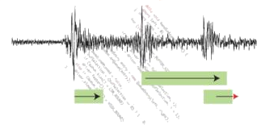

Nice realtime Java book
Peter Dibble has just published the second edition of his Real-Time Java Platform Programming book. It isn't just about the realtime APIs: it covers a lot of the theory behind realtime programming (warning: contains Actual Math), along with a lot of examples. It's got a good mixture of pragmatics and theory and does a good job of de-mystifying many of the scarier aspects of realtime.| July 10, 2008 |